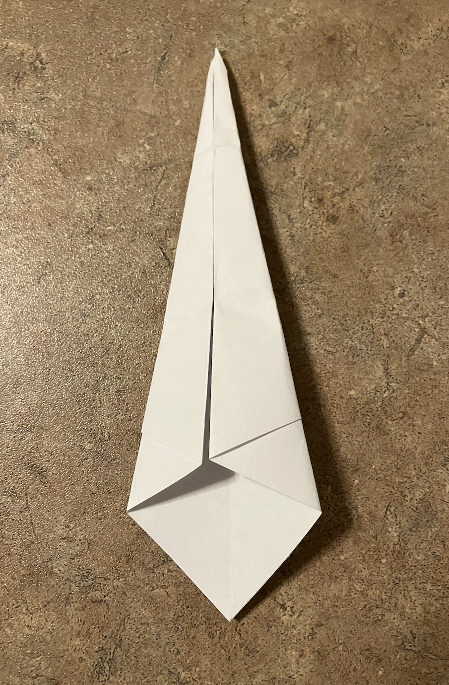

Start with the paper in a square with the points facing to the top, bottom and sides. Then fold the sides into the center to make a larger point on the top.
You can fold the paper in half from left to right to make a crease and then unfold to have a more exact fold
Next, flip the paper over and fold the two sides in again, making the point even bigger.
Fold the paper in half from top to bottom.
Next, fold the paper in half from bottom to top.
Then fold the paper in half from left to right (or right to left).
Pull the long spike on the left or right side (depending on how you folded the swan in step 5) out.
(My swan has been rotated 90 degrees but this is not necessary).
Finally, pull out the smaller spike poking out from the bigger one to create the beak and see your finished product.